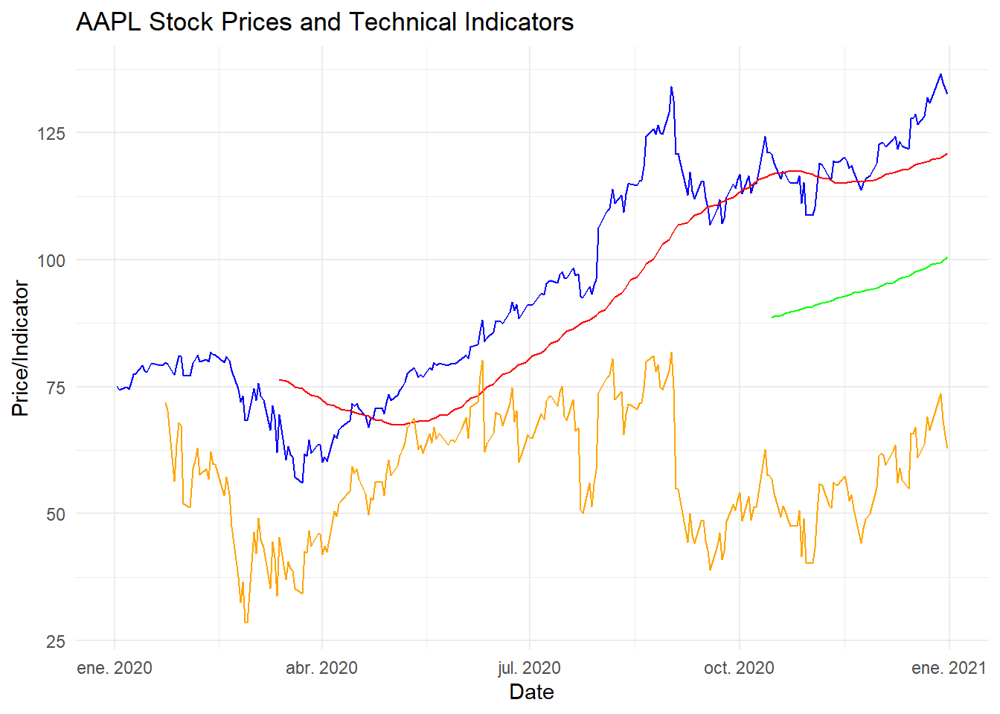

# Load required libraries
library(quantmod)Loading required package: xtsLoading required package: zoo
Attaching package: 'zoo'The following objects are masked from 'package:base':
as.Date, as.Date.numeric
######################### Warning from 'xts' package ##########################
# #
# The dplyr lag() function breaks how base R's lag() function is supposed to #
# work, which breaks lag(my_xts). Calls to lag(my_xts) that you type or #
# source() into this session won't work correctly. #
# #
# Use stats::lag() to make sure you're not using dplyr::lag(), or you can add #
# conflictRules('dplyr', exclude = 'lag') to your .Rprofile to stop #
# dplyr from breaking base R's lag() function. #
# #
# Code in packages is not affected. It's protected by R's namespace mechanism #
# Set `options(xts.warn_dplyr_breaks_lag = FALSE)` to suppress this warning. #
# #
###############################################################################
Attaching package: 'xts'The following objects are masked from 'package:dplyr':
first, lastLoading required package: TTRRegistered S3 method overwritten by 'quantmod':
method from
as.zoo.data.frame zoo library(TTR)
library(ggplot2)
# Step 3: Data Retrieval and Preparation
# Define the stock symbol and date range
stock_symbol <- "AAPL"
start_date <- as.Date("2020-01-01")
end_date <- as.Date("2021-01-01")
# Import historical stock prices
stock_data <- getSymbols(stock_symbol, src = "yahoo", from = start_date, to = end_date, auto.assign = FALSE)
# Extract adjusted close prices
closing_prices <- Cl(stock_data)
# Step 4: Introduction to Technical Indicators
# Calculate moving averages
sma_50 <- SMA(closing_prices, n = 50)
sma_200 <- SMA(closing_prices, n = 200)
# Calculate RSI
rsi <- RSI(closing_prices)
# Step 5: Implementing Technical Indicators in R
# Plotting stock prices and technical indicators
ggplot() +
geom_line(aes(x = index(closing_prices), y = closing_prices), color = "blue") +
geom_line(aes(x = index(sma_50), y = sma_50), color = "red") +
geom_line(aes(x = index(sma_200), y = sma_200), color = "green") +
geom_line(aes(x = index(rsi), y = rsi), color = "orange") +
labs(title = paste(stock_symbol, "Stock Prices and Technical Indicators"),
x = "Date", y = "Price/Indicator") +
theme_minimal()Don't know how to automatically pick scale for object of type <xts/zoo>.
Defaulting to continuous.Warning: Removed 49 rows containing missing values or values outside the scale range
(`geom_line()`).Warning: Removed 199 rows containing missing values or values outside the scale range
(`geom_line()`).Warning: Removed 14 rows containing missing values or values outside the scale range
(`geom_line()`).